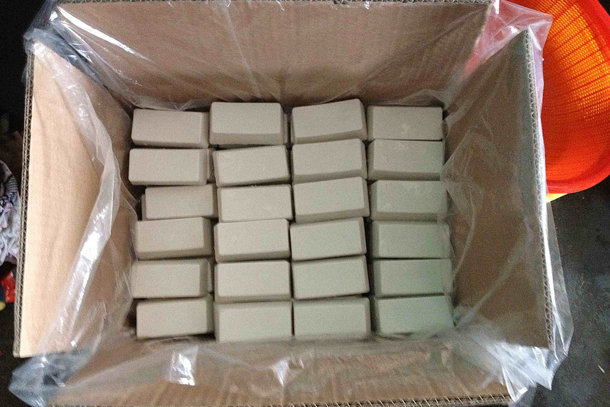

I can erase pencil marks. I can erase pencil marks. I can erase pencil marks. I can erase pencil marks. I can erase pencil marks. I can erase pencil marks. I can erase pencil marks. I can erase pencil marks. I can erase pencil marks. I can erase pencil marks. I can erase pencil marks. I can erase pencil marks. I can erase pencil marks. I can erase pencil marks. I can erase pencil marks. I can erase pencil marks. I can erase pencil marks.
I am made out of synthetic rubber and synthetic soy-based gum, also form vinyl, plastic, or gum-like materials. I am made out of synthetic rubber and synthetic soy-based gum, also form vinyl, plastic, or gum-like materials. I am made out of synthetic rubber and synthetic soy-based gum, also form vinyl, plastic, or gum-like materials. I am made out of synthetic rubber and synthetic soy-based gum, also form vinyl, plastic, or gum-like materials.
More about me- I was invented by Edward Nairne in 1770 somewere in England. More about me- I was invented by Edward Nairne in 1770 somewere in England. More about me- I was invented by Edward Nairne in 1770 somewere in England. More about me- I was invented by Edward Nairne in 1770 somewere in England. More about me- I was invented by Edward Nairne in 1770 somewere in England. More about me- I was invented by Edward Nairne in 1770 somewere in England.
phone number
